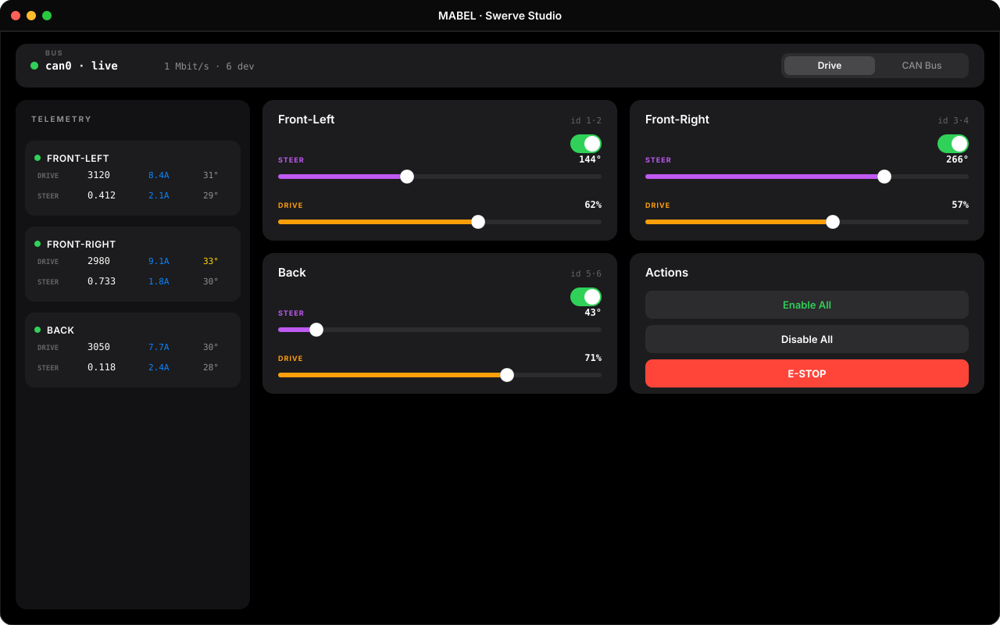
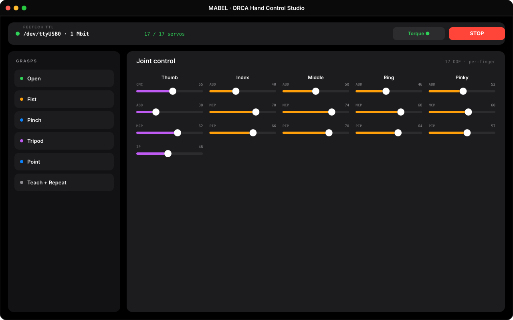

MABEL mixes actuators from five vendors — and each ships its own closed Windows tool to flash, tune, and ID them. We replace as much of that as we can with one modular firmware stack and one cross-platform GUI. Change a register, reassign a motor ID, read live status, jog a joint — all from the same app, on macOS or Ubuntu.
Every actuator company hands you a proprietary GUI — REV's Hardware Client, the Feetech debugger, Damiao's assistant, Dynamixel Wizard — usually Windows-only, each its own silo. We pulled the parts we need into our own code so the whole robot speaks one language.
One folder per subsystem (swerve_drive, openarm, orca_hand,
head, lift); flash or swap a board without touching the rest.
Where a vendor hides setup in a closed app, we re-implement it natively — most of all the REV SPARK CAN stack, reverse-engineered end-to-end (below).
GUI and host libraries run on macOS and Ubuntu. Windows isn't tested yet. No vendor binary, no OS lock-in.
Bus down or driver unbuilt? The GUI opens in SIM mode with simulated telemetry — design and test with zero hardware.
A shared iOS-styled GUI — same dark palette, sliders, and pill toggles across the swerve, hand, and lift apps. Reassign IDs, write registers, read live status, and jog any joint.

Using it · enable → steer → throttle, live
Swerve Studio · REV SPARK base
ORCA Hand · 17 Feetech servosGive a fresh Feetech servo its ID or change a Damiao CAN ID; edit registers live — REV SPARK
control mode, idle brake, PID kP, the steering encoder zero — and burn them to flash.
Drag a steering axis to an absolute angle, throttle a drive wheel by duty-cycle, move a finger or fire a grasp preset, enable / disable a motor, or hit E-STOP — instantly.
A telemetry sidebar streams position, velocity, current and temperature per controller, colour-coded as values approach their limits — so you see a hot or stalling motor before it faults.
Bring the CAN interface up / restart / scan / doctor it from a panel with a streaming console; sine-sweep a motor, zero an encoder, clear faults, read limits — the vendor-app chores, built in.
The base runs REV SPARK controllers on a 3-module delta swerve. REV only exposes them
through their Hardware Client and vendor libraries — so we read the sparkcan source,
documented the wire protocol, and re-implemented it raw in Python (SocketCAN) and C++ (Teensy
FlexCAN_T4). Zero dependency on REV's stack.
arbId = (0x02 << 24) // DEVICE_TYPE = motor controller | (0x05 << 16) // MANUFACTURER = REV Robotics | (apiClass << 10) | (apiIndex << 6) | deviceId // 1,3,5 = drive · 2,4,6 = steer
Velocity / Position / DutyCycle share one payload — an IEEE-754 LE float in bytes 0–3. Registers
live under API class 48 with a type tag, so we set kCtrlType, kIdleMode,
PID kP_0, and the steering zero kDutyCycleZeroOffset directly.
Periodic status: Period 0 (duty / volts / current / temp), Period 2 (encoder vel +
pos), Period 5 (absolute steer encoder) — the last only streams once you flip
kForceEnableStatus5.
A single RX thread reads the bus non-blocking, masks the device ID (can_id & 0x3F),
and caches each motor's latest value behind a mutex — GetVelocity() is a free read.
Full mapping in rev_can_protocol.md.
NEO / NEO550 on 3 delta modules. Reverse-engineered SPARK CAN in Python + Teensy C++.
OpenArm-derived 7-DOF arms, quasi-direct-drive over CAN (Teensy + FlexCAN_T4), MIT-mode.
Torso pitch shares the arms' Damiao/CAN driver, status, and quick-control.
16× HLS3915 fingers + 1× HLS3930 wrist on a 1 MHz TTL chain; USB adapter auto-detected.
3-DOF neck (yaw / pitch / roll) via our dynamixel_neck library.
MicroPython, BTS7960 + quad encoder, cascaded position + velocity, host lib + iOS GUI.